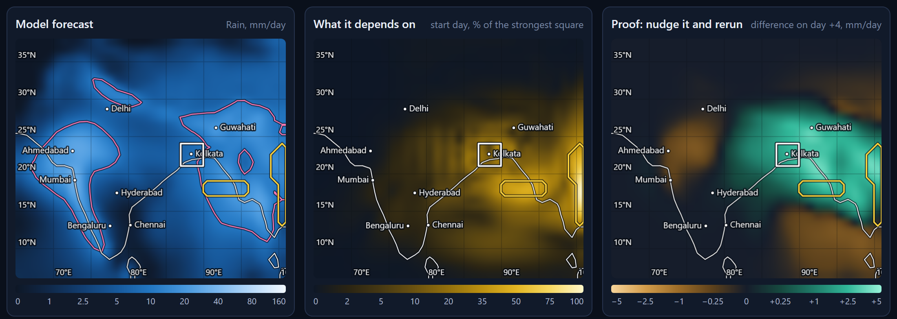

VARUNA a weather model for India that you can question
Team Ship Happens · Track 2, Multiverse of Monsoon github.com/Ar-Ch-itect22/Multiverse-of-Monsoon
VARUNA takes the last three days of India's weather and rolls it forward day by day. You can change the starting weather anywhere on the map and see what the model says happens next. This page covers the model. Page 2 covers the map and who it helps. Every number here was measured on 2020 and 2021, two years the model never saw during training or tuning.
1. Model design
Last 3 days, as the gap from normal weather for that day of year (18 maps)
+
Land/sea, height, latitude, longitude, day of year (6 maps)
Change in the gap for tomorrow. Added, decoded, fed back in.
Small and fast. 623,334 weights in a 2.5 MB file. A 10-day forecast takes about 75 ms on a laptop processor, against a limit of 5000 ms.
It predicts the gap from normal, not the weather itself. A 365-day table of normal weather, built from 2005 to 2018 only, is subtracted on the way in and added back on the way out.
It starts as "repeat yesterday". The last layer starts at zero, so the untrained model already equals the simplest baseline and training only adds corrections.
Rain is handled as log(1 + rain), so one extreme square does not dominate, and rain can never come out negative.
Local view only. No attention, no pooling, no map-wide normalisation. Section 4 explains why.
Training. Years 2005 to 2018 for training, 2019 for every choice we made, 2020 and 2021 kept for the final check. Three stages: one day ahead, then 4 days in a row, then 8 days in a row. In the later stages the model is fed its own output, which is what it faces when rolled out. The loss is squared error weighted by latitude, with squares above 10 mm of rain counted three times, plus the sharpness term in section 3. The 8-day stage tied with the 4-day stage on 2019, so we shipped the 4-day weights.
2. How we stop drift
The season cannot drift. The seasonal cycle lives in the table of normal weather, not in the network. The network only moves the gap from it.
Trained on its own output. The 4-day stage makes small errors meet the model again during training instead of first appearing at test time.
Hard limits on the way out. Rain is cut at zero, temperature is held between −40 and +60 °C, and any non-number is replaced. These are a safety net; in 103 test windows of 10 days none was needed to pass the validity check.
It fades toward normal as it gets less sure. From day 3 on, only a share of the gap from normal is sent out: for wind 60% at day 8. The shares were fitted on 2019. Rain is not faded, because that cost heavy-rain hits. The state that is rolled forward is untouched. This added 1.2 points on the unseen years.
No randomness. No dropout, no sampling. A zero shock goes through the same arithmetic as no shock and gives a bit-identical answer, which the dashboard checks live.
Result: 0 invalid windows out of 103, and at day 4 the forecast beats "repeat yesterday" by 28%.
3. How we stop blur
A sharpness term in the loss. Squared error alone rewards smooth averages. We add a penalty when the spread of values across the map differs from the spread in the real weather.
Full resolution all the way. Nothing is downsampled and upsampled, so fine detail is never thrown away.
Extra weight on heavy rain, the field that blurs first.
Day-8 map variance, model / real
Temp
Rain
Wind E
Wind N
Pressure
Moisture
Allowed range 0.40 to 2.50
1.02
0.66
0.76
0.83
0.93
0.90
4. Shocks stay local by construction
The network sees only through 3×3 windows, six of them per simulated day. So a change to one square can reach at most 6 squares away after one day, 12 after two, and so on. The rule allows 8 per day. This is a property of the design, not something we hope training learned. Any map-wide operation would let a shock in the Bay of Bengal touch Kashmir on day 1, so we used none: even the normalisation works inside each square, across channels. The dashboard draws this limit as a dashed line and the response stays inside it.
5. Measured results
Part of the automatic grade
Ours
Detail
Forecast error
25.7 / 30
Skill against the better of "repeat yesterday" and "normal for the season": day 1 +0.26, day 4 +0.07, day 8 −0.02
Heavy rain (10 mm/day)
7.7 / 15
Hit-rate skill +0.05 over the better baseline
Sharpness
10 / 10
All six fields inside the allowed range
Shock tests
13.1 / 15
Both shocks give a local, non-zero response in every window. A zero shock changes nothing.
Model total
56.6 / 70
Repo scan on a clean clone: 15 / 15
These come from our own scoreboard, which calls the organizers' scoring functions on 103 windows from 2020 and 2021. The hidden test uses other dates, so the official numbers will differ.
6. Failure modes
Past a week it adds little. Even with the fade, at day 8 the forecast is slightly worse than simply showing normal weather for the season (skill −0.02).
Heavy rain is under-called. Rain keeps only 66% of its real map variance at day 8 and heavy-rain skill is small. One square is about 100 km and one step is a day, so cloudbursts and city floods are out of reach.
Wind shocks fade too fast. For the "monsoon stall" shock the response spread outward by days 4 to 8 in only 23% of windows. The model damps a wind change before it travels.
Occasional over-reaction. For the "warm ocean" shock the response stayed within 5 standard deviations in 77% of windows, not all.
Cyclones are too weak. A cyclone's core is smaller than one square, so the model shows a low, not its true strength.
Far-out what-ifs are guesses. A change well beyond anything in 2005 to 2018 takes the model outside what it learned.
One map, three questions
What is coming, how sure are we, what does it depend on Plain JavaScript and canvas: no map tiles, no internet
What-if tab. The official "warm Bay of Bengal" shock (yellow box, +3 °C and +15% moisture), rain two days later. Left: without. Middle: with. Right: the difference. The dashed line is the furthest the model can carry a change by that day. Grey squares are where fewer than 45 of 50 alternative runs agree which way the change pushes.

Butterfly Finder tab. Question: what does rain near Kolkata on day 4 (white box) depend on? Middle: the squares of the start day that matter most. Right: we nudge the yellow patch and rerun the model. Predicted change +2.31 mm/day, real rerun +2.81 mm/day, the same nudge moved half a map away 0.00.
The visualization
Everything on screen is a live model run. The forecast and every what-if are calls from the page to the graded server's own route, and a panel shows the measured speed, the zero-shock test and a same-input-twice test.
Forecast: what is coming. The model's map sits next to what really happened and a third map shows the gap. Click any square for its day-by-day chart. Six fields, 10 days, play button.
50 futures: how sure are we. The model runs 50 times from slightly nudged starts with a small random kick each day. The kick is set to the model's own one-day miss measured on 2019. On 2020 and 2021 the spread of the 50 runs is 0.71 to 1.0 of the real miss, so it is slightly too confident late in the forecast and we say so on screen. Maps show how many of the 50 cross a line you pick, a bad-case run, and where the runs split. All 50 take about 0.3 s.
Butterfly Finder: what does it depend on. Pick an outcome. We back-propagate through the forecast to find which squares and which fields of the start day it depends on, a method used in published work on learned weather models (Hakim and Masanam 2023). Then we test the map against a real rerun, as in the figure. For temperature the prediction and the rerun agreed to 0.01 °C.
Alerts: who should act. Five roles (farmer, fisher, heat officer, hill routes, logistics). Each has plain rules, such as rain of 10 mm or more within 3 days, checked in every one of the 50 futures. The page shows the count, the likely day, a one-line reason with the numbers behind it, and how unusual the start day is against the training years. Every threshold is in one file with its source.
What-if: change it yourself. Paint any region or type a box by latitude and longitude. Set a change in temperature, moisture, wind, pressure or rain. Both official shocks are one click. A rerun takes about 0.15 s, so a judge can ask for any shock on the spot.
Impact use case: act early, and know how much to trust it
A normal forecast gives one answer and no sense of how firm it is. People who must act on weather need to know what is coming, how firm it is, and what to watch. The Alerts tab turns the 50 futures into a call for each role.
Who
Their question
What VARUNA shows
District disaster officer
Do I move pumps and teams in the next 3 days?
How many of 50 futures give very heavy rain over the district within 5 days, and the bad-case map
Farm advisory officer
Is it safe to leave the cut crop in the field this week?
"Rain on a cut crop: act, 50 of 50 futures, starts around day 1", with the reason and the day-by-day chart
Fisheries officer
Will the wind at sea be too strong?
Count of futures with a daily mean wind of 10.8 m/s or more over sea squares within 3 days
Heat officer
Is a hot spell likely to hold?
Count of futures with 2 or more days in a row at least 3 °C above normal
State planner
What if the monsoon wind stalls?
The what-if map: where rain drops, by how much, and where the answer is not robust
The Butterfly Finder adds something a forecast cannot: where to watch. If rain over a city on day 4 depends mostly on moisture and pressure in one patch of sea, that patch is where an early sign will show first.
Honest limits and what is next
Counts out of 50 are how often the model's scenarios do something. They are not calibrated probabilities.
A what-if or a sensitivity map shows what this model does. It is not proof of real-world cause.
This is a regional indicator at 100 km and one day. It does not replace official warnings.
Alert thresholds are for 100 km daily squares. Some are our own choices and are marked as such on screen.
Next: a wind-aware sea route, crop-specific checks, and a longer training run to lift day-8 skill.
Built during the event with PyTorch, NumPy, xarray, FastAPI and uvicorn. No external weather data or services. AI coding tools were used and all code was written during the hackathon. How to train, run and check everything: README.md in the repo.